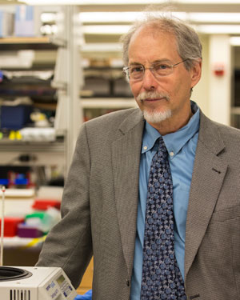

Scientists Synthesize First Functional “Designer” Chromosome in Yeast
Study reports major advance in synthetic biology
An international team of scientists led by Jef Boeke, PhD, director of NYU Langone Medical Center’s Institute for Systems Genetics, has synthesized the first functional chromosome in yeast, an important step in the emerging field of synthetic biology, designing microorganisms to produce novel medicines, raw materials for food, and biofuels.
Over the last five years, scientists have built bacterial chromosomes and viral DNA, but this is the first report of an entire eukaryotic chromosome, the threadlike structure that carries genes in the nucleus of all plant and animal cells, built from scratch. Researchers say their team’s global effort also marks one of the most significant advances in yeast genetics since 1996, when scientists initially mapped out yeast’s entire DNA code, or genetic blueprint.
“Our research moves the needle in synthetic biology from theory to reality,” says Dr. Boeke, a pioneer in synthetic biology who recently joined NYU Langone from Johns Hopkins University.
“This work represents the biggest step yet in an international effort to construct the full genome of synthetic yeast,” says Dr. Boeke. “It is the most extensively altered chromosome ever built. But the milestone that really counts is integrating it into a living yeast cell. We have shown that yeast cells carrying this synthetic chromosome are remarkably normal. They behave almost identically to wild yeast cells, only they now possess new capabilities and can do things that wild yeast cannot.”
In this week’s issue of Science online March 27, the team reports how, using computer-aided design, they built a fully functioning chromosome, which they call synIII, and successfully incorporated it into brewer’s yeast, known scientifically as Saccharomyces cerevisiae.
The seven-year effort to construct synIII tied together some 273, 871 base pairs of DNA, shorter than its native yeast counterpart, which has 316,667 base pairs. Dr. Boeke and his team made more than 500 alterations to its genetic base, removing repeating sections of some 47,841 DNA base pairs, deemed unnecessary to chromosome reproduction and growth. Also removed was what is popularly termed junk DNA, including base pairs known not to encode for any particular proteins, and “jumping gene” segments known to randomly move around and introduce mutations. Other sets of base pairs were added or altered to enable researchers to tag DNA as synthetic or native, and to delete or move genes on synIII.
“When you change the genome you”re gambling. One wrong change can kill the cell,” says Dr. Boeke. “We have made over 50,000 changes to the DNA code in the chromosome and our yeast still live. That is remarkable. It shows that our synthetic chromosome is hardy, and it endows the yeast with new properties.”
The Herculean effort was aided by some 60 undergraduate students enrolled in the “Build a Genome” project, founded by Dr. Boeke at Johns Hopkins. The students pieced together short snippets of the synthetic DNA into stretches of 750 to 1,000 base pairs or more. These pieces were then assembled into larger ones, which were swapped for native yeast DNA, an effort led by Srinivasan Chandrasegaran, PhD, a professor at Johns Hopkins. Chandrasegaran is also the senior investigator of the team’s studies on synIII.
Student participation kicked off what has become an international effort, called Sc2.0 for short, in which several academic researchers have partnered to reconstruct the entire yeast genome, including collaborators at universities in China, Australia, Singapore, the United Kingdom, and elsewhere in the U.S.
Yeast chromosome III was selected for synthesis because it is among the smallest of the 16 yeast chromosomes and controls how yeast cells mate and undergo genetic change. DNA comprises four letter-designated base macromolecules strung together in matching sets, or base pairs, in a pattern of repeating letters. “A” stands for adenine, paired with “T” for thymine; and “C” represents cysteine, paired with “G” for guanine. When stacked, these base pairs form a helical structure of DNA resembling a twisted ladder.
Yeast shares roughly a third of its 6,000 genes—functional units of chromosomal DNA for encoding proteins — with humans. The team was able to manipulate large sections of yeast DNA without compromising chromosomal viability and function using a so-called scrambling technique that allowed the scientists to shuffle genes like a deck of cards, where each gene is a card. “We can pull together any group of cards, shuffle the order and make millions and millions of different decks, all in one small tube of yeast,” Dr. Boeke says. “Now that we can shuffle the genomic deck, it will allow us to ask, can we make a deck of cards with a better hand for making yeast survive under any of a multitude of conditions, such as tolerating higher alcohol levels.”
Using the scrambling technique, researchers say they will be able to more quickly develop synthetic strains of yeast that could be used in the manufacture of rare medicines, such as artemisinin for malaria, or in the production of certain vaccines, including the vaccine for hepatitis B, which is derived from yeast. Synthetic yeast, they say, could also be used to bolster development of more efficient biofuels, such as alcohol, butanol, and biodiesel.
The study will also likely spur laboratory investigations into specific gene function and interactions between genes, adds Dr. Boeke, in an effort to understand how whole networks of genes specify individual biological behaviors.
Their initial success rebuilding a functioning chromosome will likely lead to the construction of other yeast chromosomes (yeast has a total of 16 chromosomes, compared to humans’ 23 pairs), and move genetic research one step closer to constructing the organism’s entire functioning genome, says Dr. Boeke.
Dr. Boeke says the international team’s next steps involve synthesizing larger yeast chromosomes, faster and cheaper. His team, with further support from Build a Genome students, is already working on assembling base pairs in chunks of more than 10,000 base pairs. They also plan studies of synIII where they scramble the chromosome, removing, duplicating, or changing gene order.
Detailing the Landmark Research Process
Before testing the scrambling technique, researchers first assessed synIII’s reproductive fitness, comparing its growth and viability in its unscrambled from — from a single cell to a colony of many cells — with that of native yeast III. Yeast proliferation was gauged under 19 different environmental conditions, including changes in temperature, acidity, and hydrogen peroxide, a DNA-damaging chemical. Growth rates remained the same for all but one condition.
Further tests of unscrambled synIII, involving some 30 different colonies after 125 cell divisions, showed that its genetic structure remained intact as it reproduced. According to Dr. Boeke, individual chromosome loss of one in a million cell divisions is normal as cells divide. Chromosome loss rates for synIII were only marginally higher than for native yeast III.
To test the scrambling technique, researchers successfully converted a non-mating cell with synIII to a cell that could mate by eliminating the gene that prevented it from mating.
Funding support for these experiments was provided by National Science Foundation, the National Institutes of Health, and Microsoft. Corresponding federal grant numbers are MCB-0718846 and GM-077291. Additional funding support was provided by fellowships from La Fondation pour la Recherche Médicale, Pasteur-Roux, National Sciences and Engineering Research Council of Canada, U.S. Department of Energy, and grants from the Exploratory Research Grant from the Maryland Stem Cell Research Fund and the Johns Hopkins University Applied Physics Laboratory.
Besides the teams at NYU Langone and Johns Hopkins, other scientific teams involved in the global Sc2.0 research effort are based at Loyola University in Baltimore, Md; BGI in Shenzhen, China; Tianjin University in China; Tsinghua University in China; MacQuarie University in Sydney, Australia; the Australian Wine Institute in Adelaide, Australia; the National University of Singapore; Imperial College, London, England; and the University of Edinburgh in Scotland.

{kind=link}
{kind=link}
{kind=link}